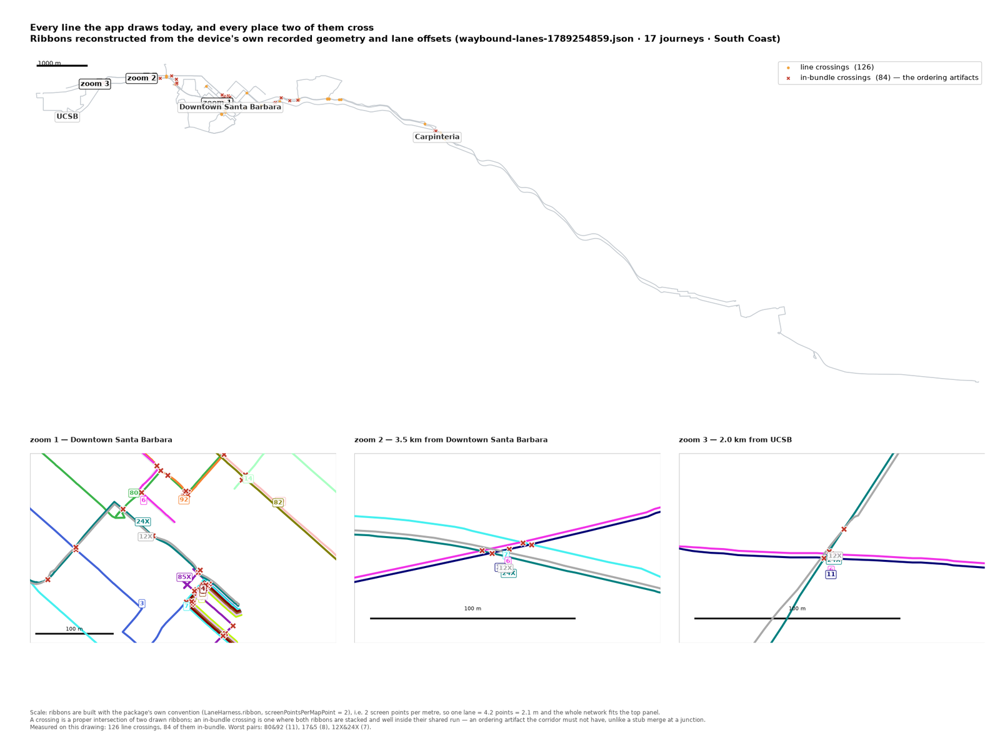
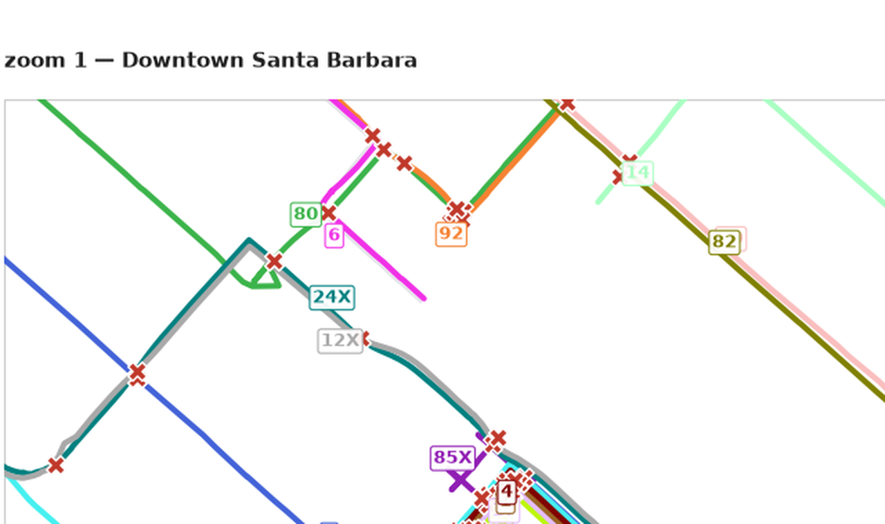
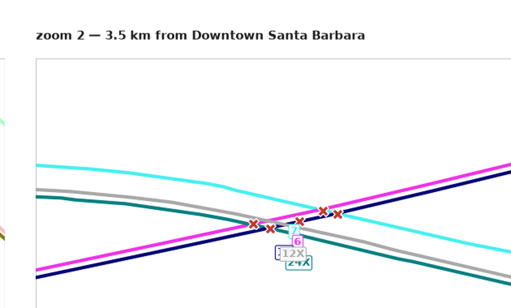
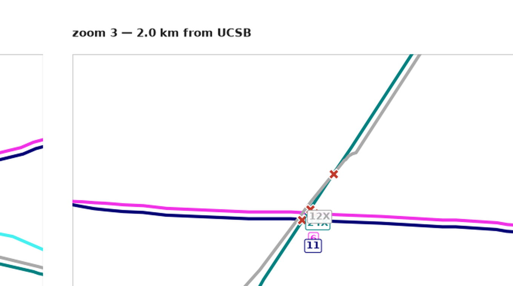

Every line the app draws, rebuilt from the device's own recorded geometry and lane
offsets (tools/replay/data/waybound-lanes-1789254859.json — 17 journeys,
South Coast). Drawn with the project's own convention, so the picture is to scale:
one lane = 4.2 points = 2.1 m.




A crossing is a proper intersection of two drawn ribbons. An in-bundle crossing is one where both ribbons are stacked and well inside their shared run — an ordering artifact a subway-style corridor must not have, unlike a stub merge at a junction, which is inherent.
A lane-order rule does not move streets; it moves which lane each route occupies. So the question the rule choice answers is exactly the one this picture asks: should routes 80 and 92 keep trading sides eleven times downtown, or should one of them hold its lane? The crossing counts CI measures are trying to answer that from the side — this is the same question drawn.
Measured on this drawing: 126 crossings, 84 in-bundle, worst pairs
80&92 (11), 17&5 (8), 12X&24X (7). Reproduce with
python3 tools/lane-visualization/draw_lanes.py (matplotlib only).
This is today's arrangement, not a per-rule redraw: the CI report carries lane orders
but not geometry.